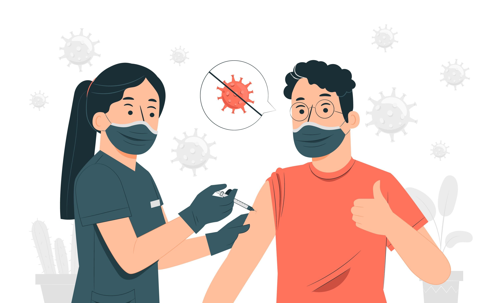

Bagaimana Cara Vaksin Bekerja ?
Vaksin bekerja dengan melatih sistem kekebalan untuk mengenali dan memerangi patogen, baik virus maupun bakteri. Untuk melakukannya, molekul tertentu dari patogen harus dimasukkan ke dalam tubuh guna memicu respons imun. Molekul tersebut disebut dengan antigen, yang ada di semua virus dan bakteri. Dengan menyuntikkan antigen ke dalam tubuh, sistem kekebalan akan belajar mengenalinya. Sebagai pelindung tubuh, sistem kekebalan akan menyerang, memproduksi antibodi, serta mengingatnya jika suatu saat bakteri atau virus tersebut muncul kembali. Jika di kemudian hari muncul, sistem kekebalan otomatis akan mengenali antigen dan menyerang secara agresif sebelum patogen menyebar yang menyebabkan penyakit.

Profil Vaksin yang akan Digunakan di Indonesia
Karena masa pandemi ini masih belum berakhir, maka ada beberapa vaksin yang akan digunakan di Indonesia dalam mencegah penyebaran virus ini. diantarnya sebagai berikut :
Vaksin Pfizer atau BNT162b2 adalah vaksin untuk mencegah infeksi virus SARS-CoV-2 penyebab penyakit COVID-19. Vaksin Pfizer merupakan hasil kerja sama perusahaan bioteknologi Jerman, BioNTech dengan perusahaan farmasi
asal Amerika, Pfizer. Vaksin ini mulai dikembangkan sejak tahun 2020. Berikut Profile dari Vaksin Pfizer:
Negara asal : Amerika Serikat
Bahan dasar : mRNA
Suhu penyimpanan : -70oC
Klaim efektivitas : Efikasi sebesar 94–95%
Tahap uji klinis : Telah melewati uji klinis fase 3 dan mendapatkan Izin Penggunaan Darurat (EUA) dari U.S. Food & Drug Administration (FDA)
Negara yang menggunakan : Amerika Serikat, Israel, Inggris, Prancis, Bahrain, Kanada, Arab Saudi, Meksiko, dan Singapura
Efek samping : Nyeri di lokasi penyuntikan, rasa lelah, sakit kepala, menggigil, nyeri sendi, dan demam
Vaksin Sinovac adalah vaksin untuk mencegah infeksi virus SARS-CoV-2 atau COVID-19. Vaksin Sinovac yang dikenal juga dengan nama CoronaVac sudah mendapat izin penggunaan darurat dari Badan Pengawas Obat dan Makanan
(BPOM) RI. Berikut Profile dari Vaksin Sinovac:
Negara asal : Cina
Bahan dasar : Virus yang dimatikan (inactivated virus)
Suhu penyimpanan : 2–8oC (suhu kulkas)
Klaim efektivitas : Efikasi sekitar 65,3% (di Indonesia)
Tahap uji klinis : Sudah melewati uji klinis fase 3 dan mendapatkan Izin Penggunaan Darurat (EUA) dari BPOM
Negara yang menggunakan : Indonesia, Brasil, Turki, dan Cina
Efek samping : Nyeri atau kemerahan di lokasi penyuntikan, nyeri otot, demam, dan sakit kepala
Vaksin Moderna adalah vaksin untuk mencegah infeksi virus SARS-CoV-2 atau COVID-19. Vaksin Moderna atau mRNA-1273 dikembangkan sejak Januari 2020 oleh Moderna and Vaccine Research Center at the National Institute of
Allergy and Infectious Disease (NIAID) di Amerika. Berikut Profile dari Vaksin Moderna:
Negara asal : Amerika Serikat
Bahan dasar : mRNA
Suhu penyimpanan : -20oC
Klaim efektivitas : Efikasi sebesar 94,5%
Tahap uji klinis : Telah melalui uji klinis fase 3 dan mendapatkan Izin Penggunaan Darurat (EAU) dari U.S. Food & Drug Administration (FDA)
Negara yang menggunakan : Kanada, Qatar, Amerika Serikat, Inggris
Efek samping : Nyeri, bengkak dan kemerahan di lokasi penyuntikan, rasa lelah, sakit kepala, nyeri otot, menggigil, demam, serta mual dan muntah
Vaksin AstraZeneca atau AZD1222 adalah vaksin untuk mencegah penyakit COVID-19. Vaksin ini merupakan hasil kerja sama antara Universitas Oxford dan AstraZeneca yang dikembangkan sejak Februari 2020. Berikut Profile dari
Vaksin Oxford atau AstraZeneca:
Negara asal : Inggris
Bahan dasar : Viral vector
Suhu penyimpanan : 2–8oC (suhu kulkas)
Klaim efektivitas : Efikasi sebesar 62-90%
Tahap uji klinis : Telah melewati uji klinis fase 3 dan mendapatkan Izin Penggunaan Darurat dari Otoritas Inggris
Negara yang menggunakan : Inggris, India, Meksiko
Efek samping : Nyeri dan bengkak pada lokasi penyuntikan, kemerahan di kulit, demam ringan, dan sakit kepala
Vaksin Novavax atau NVX-CoV2372 adalah vaksin untuk mencegah infeksi virus SARS-CoV-2 penyebab COVID-19. Vaksin ini telah menjalani uji klinis fase 3 di Inggris dan fase 2b di Afrika Selatan. Berikut Profile dari Vaksin
Novavax:
Negara asal : Amerika Serikat
Bahan dasar : Protein subunit
Suhu penyimpanan : 2–8oC (suhu kulkas)
Klaim efektivitas : Belum diketahui
Tahap uji klinis : Sedang menjalani uji klinis fase 3
Negara yang menggunakan : Amerika Serikat
Efek samping : Sejauh ini tidak terlihat efek samping serius
Vaksin Sinopharm berisi virus Corona yang dimatikan (inactivated virus). Vaksin Sinopharm bekerja dengan cara memicu sistem kekebalan tubuh untuk menghasilkan antibodi yang dapat melawan virus Corona. Berikut Profile
dari Vaksin Sinopharm:
Negara asal : Cina
Bahan dasar : Virus yang dimatikan (inactivated virus)
Suhu penyimpanan : 2–8oC (suhu kulkas)
Klaim efektivitas : Efikasi sebesar 79,34%
Tahap uji klinis : Sudah melewati tahap uji klinis fase 3 dan mendapatkan izin penggunaan dari otoritas kesehatan di Cina
Negara yang menggunakan : Cina, Bahrain, Uni Emirat Arab
Efek samping : Sejauh ini, tidak memiliki efek samping yang serius. Efek samping umumnya bersifat ringan, seperti demam, nyeri dan bengkak di lokasi penyuntikan, serta sakit kepala.
BioFarma bekerja sama dengan Lembaga Biomolekuler Eijkman masih terus melakukan pengembangan dan penelitian terhadap vaksin COVID-19. Uji klinis terhadap vaksin ini rencananya akan dimulai sekitar bulan Juni 2021.
Vaksin Sputnik belakangan ini cukup banyak diperbincangkan. Vaksin Sputnik V atau yang dikenal juga sebagai Gam-COVID-Vac adalah vaksin COVID-19 yang diproduksi oleh Gamaleya Research Institute, Rusia. Berikut Profile
dari Vaksin Sputnik V:
Negara asal : Rusia
Bahan dasar : Viral vector
Suhu penyimpanan : 2–8oC (suhu kulkas)
Klaim efektivitas : Efikasi 91,6%
Tahap uji klinis : Sudah melewati uji klinis fase 3
Negara yang menggunakan : Rusia
Efek samping : nyeri di tempat suntikan, flu, demam, sakit kepala, dan kelelahan.